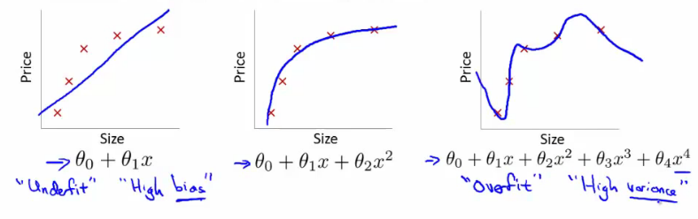

07: Regularization
The problem of overfitting
- So far we've seen a few algorithms - work well for many applications, but can suffer from the problem of overfitting
- What is overfitting?
- What is regularization and how does it help
Overfitting with linear regression
-
Using our house pricing example again
-
Fit a linear function to the data - not a great model
- This is underfitting - also known as high bias
-
Bias is a historic/technical one - if we're fitting a straight line to the data we have a strong preconception that there should be a linear fit
- In this case, this is not correct, but a straight line can't help being straight!
-
Fit a quadratic function
- Works well
-
Fit a 4th order polynomial
-
Now curve fits through all five examples
- Seems to do a good job fitting the training set
- But, despite fitting the data we've provided very well, this is actually not such a good model
- This is overfitting - also known as high variance
-
Now curve fits through all five examples
-
Algorithm has high variance
- High variance - if fitting high order polynomial then the hypothesis can basically fit any data
- Space of hypothesis is too large
-
Fit a linear function to the data - not a great model

-
To recap, if we have too many features then the learned hypothesis may give a cost function of exactly zero
- But this tries too hard to fit the training set
- Fails to provide a general solution - unable to generalize (apply to new examples)
Overfitting with logistic regression
-
Same thing can happen to logistic regression
- Sigmoidal function is an underfit
- But a high order polynomial gives an overfitting (high variance hypothesis)

Addressing overfitting
- Later we'll look at identifying when overfitting and underfitting is occurring
-
Earlier we just plotted a higher order function - saw that it looks "too curvy"
- Plotting hypothesis is one way to decide, but doesn't always work
- Often have lots of features - here it's not just a case of selecting a degree polynomial, but also harder to plot the data and visualize to decide what features to keep and which to drop
- If you have lots of features and little data - overfitting can be a problem
-
How do we deal with this?
-
1) Reduce number of features
- Manually select which features to keep
- Model selection algorithms are discussed later (good for reducing number of features)
-
But, in reducing the number of features we lose some information
- Ideally select those features which minimize data loss, but even so, some info is lost
-
2) Regularization
- Keep all features, but reduce magnitude of parameters θ
- Works well when we have a lot of features, each of which contributes a bit to predicting y
-
1) Reduce number of features
Cost function optimization for regularization
-
Penalize and make some of the θ parameters really small
- e.g. here θ3 and θ4
-
The addition in blue is a modification of our cost function to help penalize θ3 and θ4
- So here we end up with θ3 and θ4 being close to zero (because the constants are massive)
- So we're basically left with a quadratic function

-
In this example, we penalized two of the parameter values
- More generally, regularization is as follows
-
Regularization
- Small values for parameters corresponds to a simpler hypothesis (you effectively get rid of some of the terms)
- A simpler hypothesis is less prone to overfitting
-
Another example
- Have 100 features x1, x2, ..., x100
-
Unlike the polynomial example, we don't know what are the high order terms
- How do we pick the ones to shrink?
-
With regularization, take cost function and modify it to shrink all the parameters
-
Add a term at the end
- This regularization term shrinks every parameter
- By convention you don't penalize θ0 - minimization is from θ1 onwards
-
Add a term at the end
The penalty runs over θ1, θ2, …, θn — by convention θ0 is not penalised.
- In practice, if you include θ0 it has little impact
-
λ is the regularization parameter
- Chapter 05 derives this penalty as MAP estimation with a Gaussian prior - "prefer small parameters", stated probabilistically
-
Controls a trade off between our two goals
- 1) Want to fit the training set well
- 2) Want to keep parameters small
-
With our example, using the regularized objective (i.e. the cost function with the regularization term) you get a much smoother curve which fits the data and gives a much better hypothesis
-
If λ is very large we end up penalizing ALL the parameters (θ1, θ2 etc.) so all the parameters end up being close to zero
-
If this happens, it's like we got rid of all the terms in the hypothesis
- The result here is then underfitting
- So this hypothesis is too biased because of the absence of any parameters (effectively)
-
If this happens, it's like we got rid of all the terms in the hypothesis
-
If λ is very large we end up penalizing ALL the parameters (θ1, θ2 etc.) so all the parameters end up being close to zero
-
So, λ should be chosen carefully - not too big...
- We look at some automatic ways to select λ later in the course
Regularized linear regression
-
Previously, we looked at two algorithms for linear regression
- Gradient descent
- Normal equation
- Our linear regression with regularization is shown below
import numpy as np
def J(theta, X, y, lam):
m = len(y)
err = ((X @ theta - y) ** 2).sum()
penalty = lam * (theta[1:] ** 2).sum() # theta[1:] - theta0 is not penalised
return (err + penalty) / (2 * m)
The regularized cost. The penalty slices from theta[1:], leaving θ0 out — matching the sum from j = 1.
-
Previously, gradient descent would repeatedly update the parameters θj, where j = 0,1,2...n simultaneously
- Shown below
j = 1, 2, 3, …, n. θ0 has its own line above because it is never penalised — on the original slide the 0 is struck through in this index.
-
We've got the θ0 update here shown explicitly
- This is because for regularization we don't penalize θ0 so treat it slightly differently
-
How do we regularize these two rules?
-
Take the term and add λ/m * θj
- Sum for every θ (i.e. j = 1 to n)
- This gives regularization for gradient descent
-
Take the term and add λ/m * θj
- We can show using calculus that the equation given below is the partial derivative of the regularized J(θ)
j = 1, 2, 3, …, n. The bracketed term is the partial derivative of the regularised J(θ).
-
The update for θj
-
θj gets updated to
- θj - α * [a big term which also depends on θj]
-
θj gets updated to
- So if you group the θj terms together
-
The term
Slightly less than 1, so each update shrinks θj a little before the usual gradient step.
alpha, lam, m = 0.05, 10, 10 1 - alpha * lam / m # 0.95 : theta_j is multiplied by this every step alpha, lam, m = 0.01, 1, 10 1 - alpha * lam / m # 0.999 : closer to 1 for gentler regularization
The shrink factor for two settings — every update scales θj by a number just under 1 before the usual gradient step.
- Is going to be a number less than 1 usually
-
Usually learning rate is small and m is large
- So this typically evaluates to (1 - a small number)
- So the term is often around 0.99 to 0.95
-
This in effect means θj gets multiplied by 0.99
- Means the squared norm of θj gets a little smaller
- The second term is exactly the same as the original gradient descent
Regularization with the normal equation
-
Normal equation is the other linear regression model
- Minimize the J(θ) using the normal equation
-
To use regularization we add a term (+ λ [n+1 x n+1]) to the equation
- [n+1 x n+1] is the identity matrix with the top-left entry set to 0 — so θ0 escapes the penalty, as everywhere else in this chapter
An [n+1 x n+1] matrix — the identity with the top-left entry set to 0, so that θ0 escapes the penalty.
X = np.array([[1, 2, 2], # x2 is an exact copy of x1, [1, 3, 3], # so X.T @ X is singular [1, 4, 4], [1, 5, 5]], dtype=float) y = np.array([2, 3, 4, 5], dtype=float) np.linalg.det(X.T @ X) # 0.0 - not invertible L = np.eye(3) L[0, 0] = 0 # the modified identity from the equation above theta = np.linalg.solve(X.T @ X + 1.0 * L, X.T @ y) X @ theta # [2.14, 3.05, 3.95, 4.86] - a sensible fit anyway
Redundant features make XTX singular — exactly the non-invertibility case from chapter 04. Adding λ times the modified identity makes the system solvable again.
Regularization for logistic regression
- We saw earlier that logistic regression can be prone to overfitting with lots of features
- Logistic regression cost function is as follows;
-
To modify it we have to add an extra term
-
This has the effect of penalizing the parameters θ1, θ2 up to θn
- Means, like with linear regression, we can get what appears to be a better fitting lower order hypothesis
-
How do we implement this?
-
Original logistic regression with gradient descent function was as follows
j = 0, 1, 2, 3, …, n
-
Original logistic regression with gradient descent function was as follows
-
Again, to modify the algorithm we simply need to modify the update rule for θ1, onwards
-
Looks cosmetically the same as linear regression, except obviously the hypothesis is very different
Cosmetically the same as regularised linear regression — but hθ(x) is the sigmoid here, so it is a different algorithm.
-
Looks cosmetically the same as linear regression, except obviously the hypothesis is very different
Advanced optimization of regularized linear regression
- As before, define a cost_function which takes a θ parameter and gives jVal and gradient back
def cost_function(theta):
jVal = [code to compute ];
gradient[0] = [code to compute ];
gradient[1] = [code to compute ];
gradient[2] = [code to compute ];
gradient[n] = [code to compute ];
-
use
scipy.optimize.minimize- Pass it the
cost_functionobject - Minimizes in an optimized manner using the cost function
- Pass it the
-
jVal-
Need code to compute J(θ)
- Need to include regularization term
-
Need code to compute J(θ)
-
Gradient
- Needs to be the partial derivative of J(θ) with respect to θi
- Adding the appropriate term here is also necessary
def cost_function(theta):
jVal = [code to compute ];
gradient[0] = [code to compute ];
gradient[1] = [code to compute ];
gradient[2] = [code to compute ];
gradient[n] = [code to compute ];
-
Ensure summation doesn't extend to the lambda term!
- It doesn't, but, you know, don't be daft!